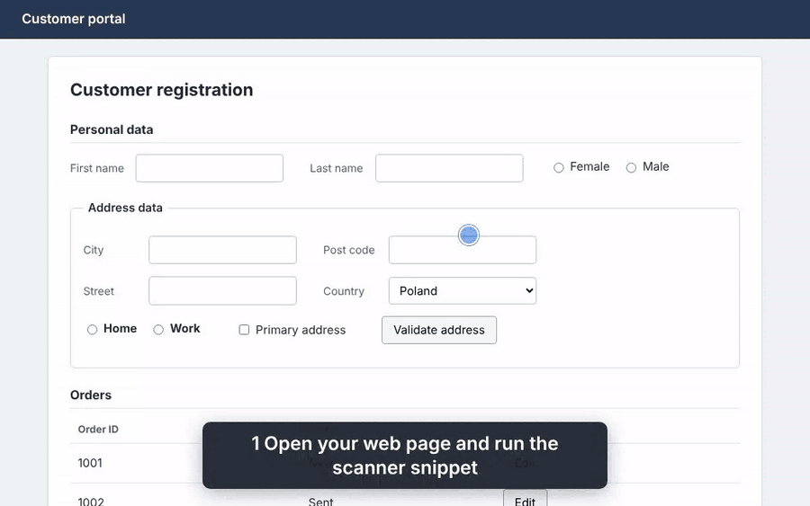

Scan a web page, get a Blue Prism object
A free tool for Blue Prism developers. It reads the fields on a web page, builds a stable XPath for each one, and writes the business object for you, with the actions, inputs, checks and error handling already in place.
It is one HTML file that runs in your browser. Nothing is uploaded: your pages, XPaths and objects stay on your computer.

How it works
- Your web page
Any page you automate in Chrome or Edge.
- Scan
Run the scanner snippet in Chrome or Edge DevTools. It lists the buttons, fields, dropdowns and tables, with an XPath and a name for each.
- Combine
Choose which fields belong to which action: Fill Address, Click Save, Read Orders. Several screens can go into one object.
- Generate
Download a
.bpobjectbuilt from your own template object, so it follows your team's naming and layout. - Import into Blue Prism
File, Import. Try it in a development environment first, like any new object.
What the generated actions do
- Skip empty inputs
- An empty input means “leave this field alone”. The action skips it instead of blanking the field on the page.
- Check after writing
- Each field is read back and compared with what was written.
Fill Details / Set Amount: field shows "12", expected "120" - Say what failed
- Every error names the action and the step, so you don't have to guess which of fifty fields broke.
Fill Details / Select Reason: no option "Refund" in the dropdown - Select from any dropdown
- The option is found by its text, then selected by position, which also works where selecting by text does not.
- Read tables into collections
- One read of the table; the first row becomes the column names.
- Keep XPaths in one place
- All XPaths sit on one page as data items. When the website changes, rescan and refresh them without rebuilding the object.
- Follow your standards
- Prefixes, wording, layout and the steps themselves come from a template object you control.
- Repair older objects
- Fixes wrong object references and missing Clean Up stages in objects you generated earlier.
Try it in two minutes
- Open the example page in Chrome or Edge.
- Open the generator. Its getting-started guide has a Copy scanner button and shows where to paste it in DevTools. Run the scanner on the example page.
- In the generator, load the example template and the CSV file the scanner saved.
- Group the fields by section, generate, and look at the object in a development environment.
For your own pages you need Blue Prism (built and tested with 7.5), Chrome or Edge, and a browser object of your own with one action that clicks, reads and writes by XPath. The generator builds a matching template from it. What that action needs.